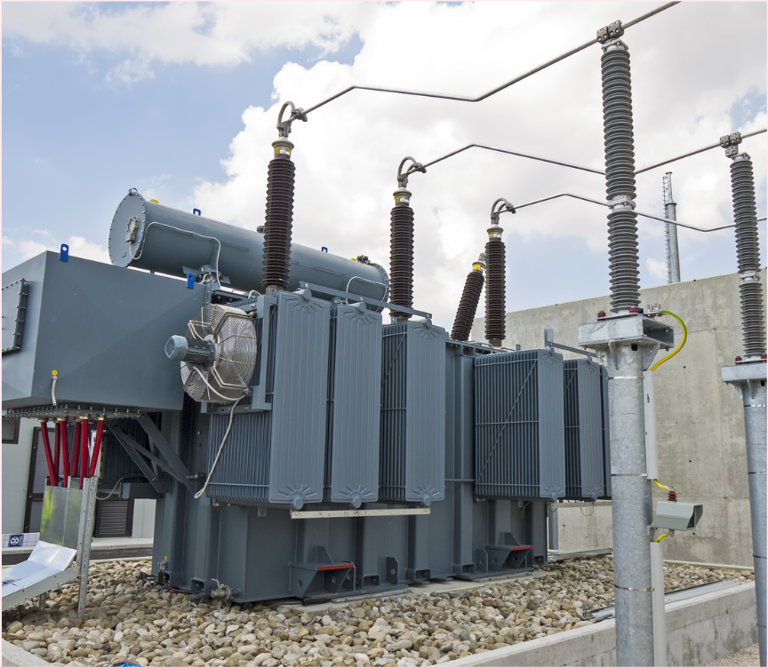
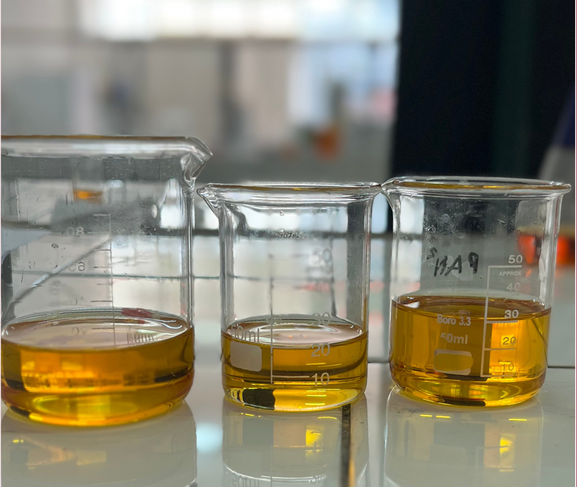
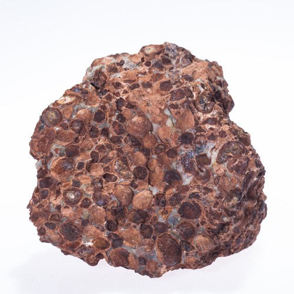
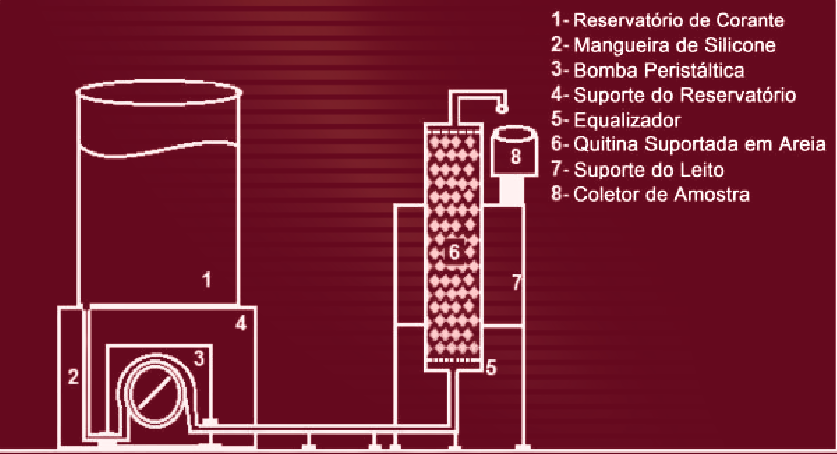
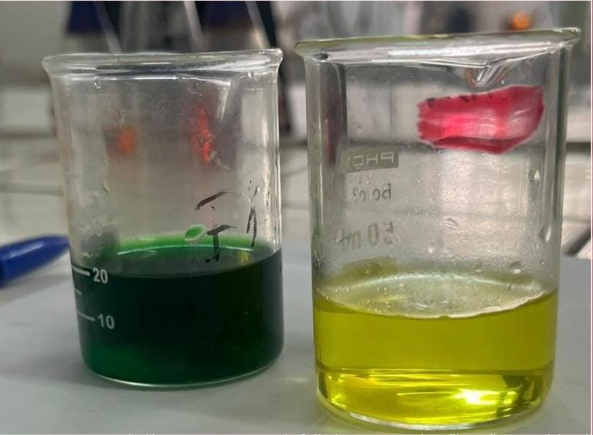
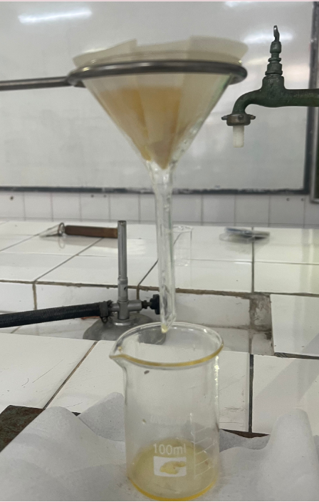

Uso da Bauxita Ativada no Tratamento de Óleos Isolantes
Uma abordagem sustentável e inovadora para a regeneração de transformadores elétricos, unindo Química e Tecnologia.
Conheça o Protótipo
Degradação do Óleo Mineral
Os transformadores elétricos dependem do óleo mineral para isolamento e refrigeração. No entanto, a exposição contínua ao calor e ao oxigênio provoca a oxidação do[...]
O descarte inadequado desse óleo é um risco ambiental. A regeneração surge como uma alternativa para prolongar a vida útil do fluido, e a bauxita ativada se destaca com[...]

Por que a Bauxita?
A bauxita ativada (rica em alumina - Al₂O₃) possui alta porosidade e área superficial. Sua superfície polar atrai e retém moléculas indesejadas, como ácidos orgâni[...]

Desenvolvimento do Protótipo
Construímos um sistema de bancada para demonstrar o fluxo de adsorção. O protótipo simula a passagem do óleo degradado por uma coluna de bauxita ativada[...]

Tubo acrílico transparente contendo o leito de bauxita ativada, permitindo a visualização do processo de percolação do fluido.
Garrafas PET adaptadas para servirem como tanques de entrada (óleo degradado) e saída (óleo tratado).
Filtros de papel e gaze posicionados antes e depois da coluna para reter partículas sólidas e resíduos de bauxita.
Verde ➔ Amarelo
A solução com corante passou pela alumina e perdeu sua coloração forte, provando a retenção de compostos.

3,5 ➔ 5,0
A mistura de óleo com vinagre teve seu pH elevado após passar pelo tratamento com óxido de alumínio (alumina).

200%
Excesso de alumina utilizado em relação ao cálculo teórico, garantindo a saturação completa dos ácidos presentes na amostra.
A regeneração do óleo isolante por bauxita não só reduz os custos operacionais com a compra de óleo novo, mas também evita o descarte inadequado de resíduos perigosos.Além disso, a bauxita saturada pode ser destinada à indústria de cerâmica vermelha, incorporando o conceito de Economia Circular e alinhando o projeto aos O[...]